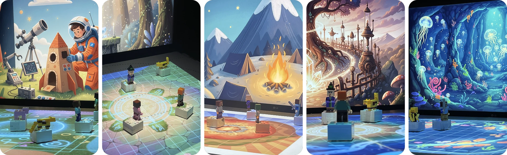
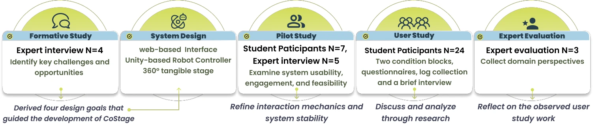
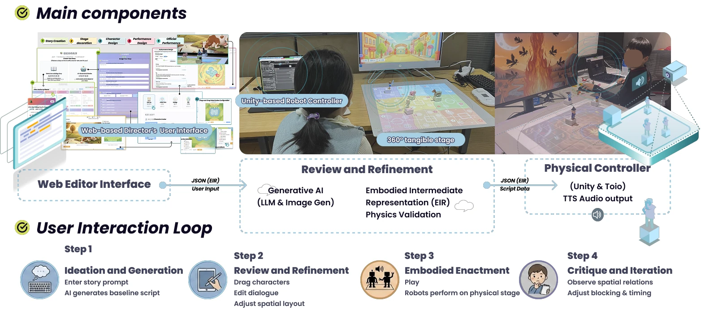
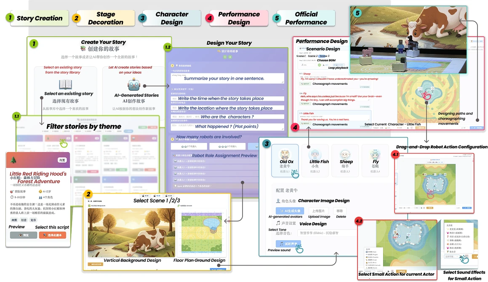
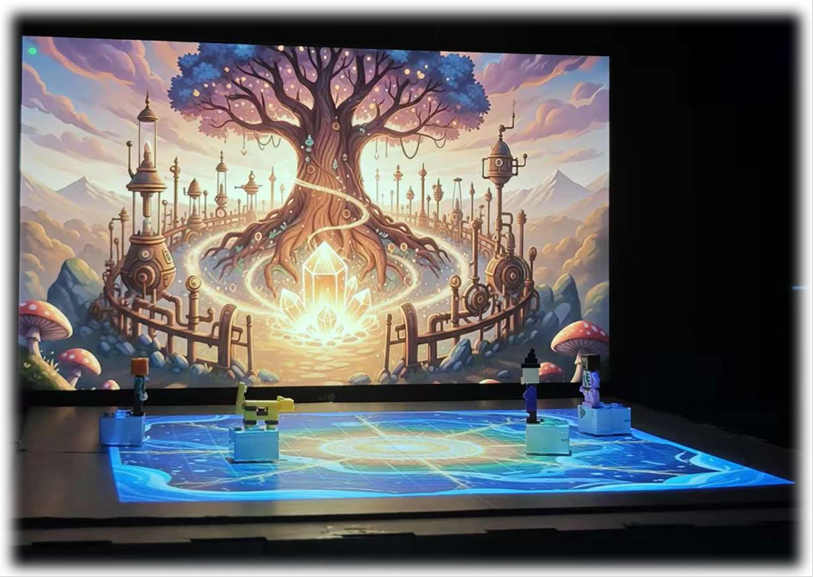
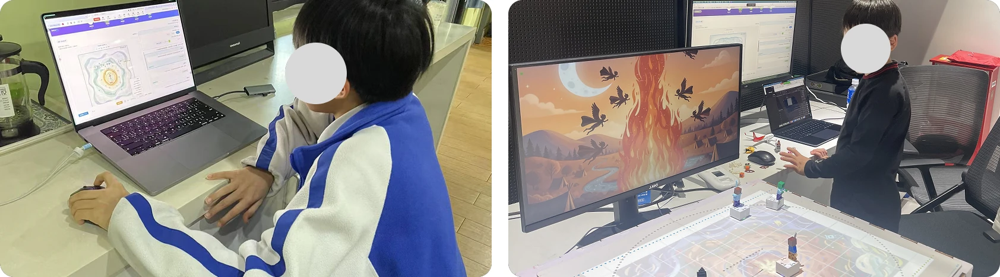
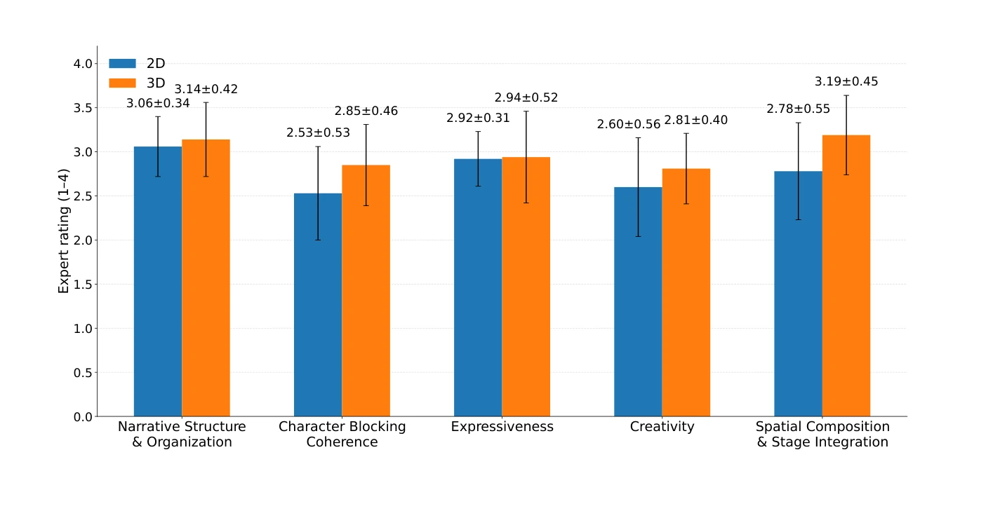
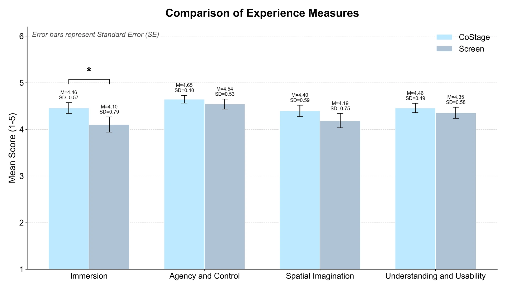

The Team



Junrong Song*, Huanyi Wan*, Lei Han, Yinghao Gao, David Yip†, Xin Tong†
We present CoStage, an AI-supported embodied co-creation platform that combines LLM-based story generation with multi-robot stage performance to support children’s narrative construction and spatial imagination. Unlike prior AI storytelling tools that are largely screen-based, CoStage allows children to direct robot actors on a 360° tangible stage, transforming written stories into spatially enacted performances. Informed by formative work with domain experts, we evaluated CoStage in a within-subjects study (N = 24) comparing a robot enactment condition with a screen-based animation condition. Our findings indicate that robot-stage performance can heighten immersion, strengthen children’s sense of directorial agency, support spatial sensemaking, and foster a planning–enactment coordination loop during storytelling. This work advances child–computer interaction by offering design implications and demonstrating how embodied AI co-creation can support children’s spatial cognition and narrative engagement.
CoStage was developed through a five-stage iterative research and design process: a formative study with domain experts (N = 4), system architecture and prototype design, a pilot study with children and drama educators (N = 12; 7 children and 5 experts), a controlled within-subjects user study (N = 24, ages 8–12), and expert artifact evaluation (N = 3).
Interviews with four specialists in child drama education and elementary instruction (E1–E4) surfaced four design goals: (G1) support exaggerated visual cues and simplified, age-appropriate interaction for elementary school children (ages 7–12); (G2) enable expressive and customizable robot actors to foster character ownership; (G3) scaffold the full drama creation workflow from ideation to rehearsal and revision; and (G4) support spatialized narrative sensemaking by treating character placement, movement, and stage layout as active storytelling resources.

CoStage connects children’s story authoring with physical robot enactment across three synchronized layers: a Vue.js Web Editor Interface, a Node.js API Bridge orchestrating AI services and WebSocket sync, and a Unity-based Physical Controller driving up to four Sony toio Core Cube robots via Bluetooth.


On the physical tabletop stage (a 45 × 45 cm toio mat), a ceiling-mounted projector casts AI-generated floor textures downward while a vertical display behind the stage presents atmospheric backdrops. Modular LEGO minifigures mounted on the toio robots allow children to assemble, customize, and physically reposition characters by hand during rehearsal.
Following a pilot study with 7 children and 5 experts (N = 12), we bridged four key gaps prior to the main evaluation: replacing one-shot prompting with multi-turn narrative scaffolding (Ideation), expanding the library to ten emotion-oriented micro-actions such as joy, fear, and agreement (Expressiveness), adding LEGO mounting plates (Identity), and strengthening 360° proximity avoidance and stage-blocking cues (Robustness).

We conducted a counterbalanced within-subjects study with 24 elementary school children (10 boys, 14 girls; Grades 3–6; age M = 9.62, SD = 1.21) across 90-minute sessions. Using the exact same web-based director workflow, each child created and rehearsed stories under two enactment conditions: a 2D screen-based animation condition (top-down canvas preview) and the 3D CoStage robot enactment condition (live physical stage performance), yielding 48 recorded performance artifacts evaluated alongside interaction logs, self-reported experience scales, comparative preferences, and post-study interviews.

Strong Preference & Heightened Immersion: Overall, 21 of 24 children (87.5%) preferred 3D CoStage over 2D screen animation (binomial test p < .001), reporting significantly higher Immersion in 3D (M = 4.46, SD = 0.57 vs. 2D M = 4.10, SD = 0.79; t(23) = 2.21, p = .038, d = 0.44) while sustaining high ratings in Agency and Control (M = 4.65 vs. 4.54), Spatial Imagination (M = 4.40 vs. 4.19), and Usability (M = 4.46 vs. 4.35). Comparative preference intensity ratings also strongly favored CoStage across Agency (M = 4.46, p < .001), Spatial Reasoning (M = 4.46, p < .001), Creativity (M = 4.33, p < .001), Expression (M = 4.08, p < .001), and Ease of Use (M = 3.79, p = .001).
Spatial Sensemaking Without Extra Interaction Cost: Three drama education experts rated 3D artifacts higher on spatially grounded dimensions—Character Blocking Coherence (M = 2.85 vs. 2.53) and Spatial Composition & Stage Integration (M = 3.19 vs. 2.78)—compared to 2D. Crucially, system logs showed no significant overhead from physical staging in total spatial actions (118.8 vs. 124.3), active duration (14.5 vs. 14.8 min), or action density (8.7 vs. 9.0 acts/min; all p > .70).
Planning–Enactment Coordination Loop: Rather than editing linearly, children treated 2D planning and 3D enactment as complementary tools—rapidly sketching paths in the overhead 2D view, observing distance, facing direction, and occlusion from multiple angles around the physical stage, and physically repositioning robot actors as an embodied “spatial debugger” to refine narrative pacing and intent.

